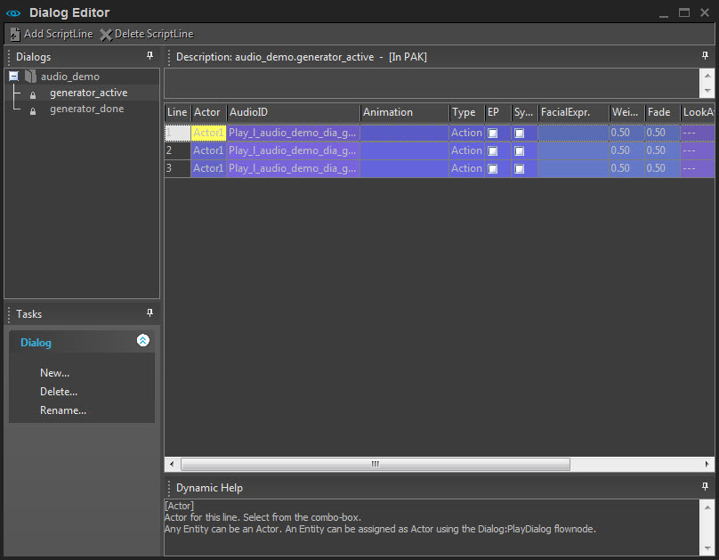
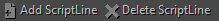
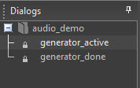
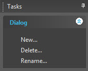
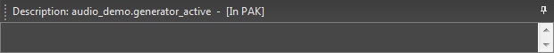
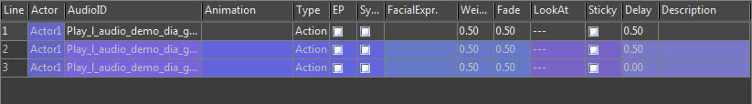
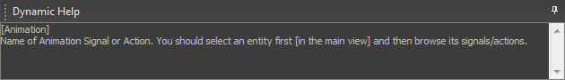
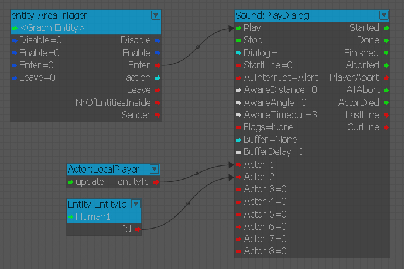
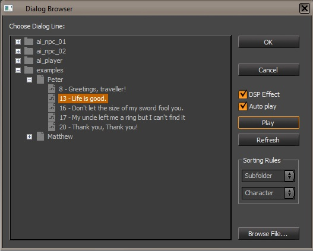

Начиная с версии 5.6, редактор диалогов больше не поддерживается в Sandbox, и некоторые функции могут работать не так, как ожидалось. Система динамического реагирования (DRS) вместо этого можно использовать при работе над диалогами.
Дополнительную информацию об этом инструменте см. Система динамического реагирования страница.
Обзор
Редактор диалогов используется для воспроизведения произносимых слов в CRYENGINE во время обычных игровых сцен и в кат-сценах. Редактор диалогов ссылается на определенные строки диалога и полностью совместим с региональной языковой локализацией и субтитрами.
К функциям редактора диалогов можно обращаться с помощью Flow Graph.

Редактор диалогов
Вместо системы меню в верхней части редактора расположены две кнопки.

- Добавьте ScriptLine: Добавляет строку в текущий диалоговый скрипт.
- Удалить ScriptLine: Удаляет строку из текущего диалогового сценария.
Диалоги панель содержит браузер для всех диалоговых сценариев, организованных в папке Libs\Dialogs. По умолчанию диалоги редактирования заблокированы, чтобы напомнить, что редактирование происходит локально.
Щелкаем правой кнопкой мыши по скрипту и выбираем Локальное редактирование позволит редактировать.

Меню задач обеспечивает доступ к параметрам управления диалоговым меню.

- Новое: Позволяет создавать новые группы DialogScripts и диалоговых сценариев.
- Удалить: Удаляет текущий выбранный !DialogScript, если это не protected. Удаление последней оставшейся группы DialogScript приведет к удалению и ее родительской группы.
- Переименовать: Вызывает диалоговое окно переименования !DialogScript. Переименование родительской группы приведет к созданию или перемещению DialogScript в определенную группу.
В поле описания показаны подробности и свойства строк, используемых в !DialogScript.

Под описанием находится основная панель редактирования диалоговых строк.

Настройка | Описание |
|---|---|
Линия | Текущая строка. Щелкните этот столбец, чтобы выбрать всю строку. Затем вы можете перетащить линию. Чтобы добавить новую строку, double нажмите в свободной области или используйте Добавить ScriptLine с панели инструментов. |
Actor | Actor для этой строки. Выберите это из поля со списком. Любая сущность может быть Actor. Объекту можно назначить Actor с помощью узла потока Dialog:PlayDialog. |
AudioID | AudioControlID должен сработать. Примечание: Название звука не будет иметь расширения *.wav. Если указан звук, время задержки указывается относительно окончания звука. |
Анимация | Имя анимационного сигнала или действия. Сначала вам следует выбрать объект на главном экране, а затем просмотреть его сигналы/действия. |
Тип | Сигнал = OneShot анимация. Действие = Циклическая анимация. Анимация может быть автоматически остановлена, если включена синхронизация. |
EP | Если этот флажок установлен, для воспроизведения анимации будет использоваться точное позиционирование (EP). Целью для EP является цель LookAt. Если вы хотите убедиться, что анимация ориентирована точно, используйте эту опцию. |
Синхронизировать | Если этот флажок установлен, анимация или действие автоматически остановятся, когда звук закончится. |
FacialExpr. | Выражение лица. Обычно каждый звук уже синхронизирован по губам и может уже содержать выражения лица. Используйте с осторожностью. |
Вес | Вес выражения лица [0-1]. Насколько сильное выражение лица должно быть применено. Если звук уже содержит выражение лица, используйте только небольшие значения < 0,5. |
Затухание | Время затухания выражения лица в секундах. Насколько быстро должно быть применено выражение лица. |
LookAt | Посмотрите на цель Actor. Actor попытается посмотреть на свою цель, прежде чем она начнет говорить/анимировать. Иногда это невозможно гарантировать. |
| Липкий | Когда вы указываете Actor посмотреть на свою цель, это применяется только в самом начале текущей строки сценария. Если вы хотите заставьте его постоянно смотреть на вас, активируйте Sticky Lookat. Вы можете сбросить фиксированный обзор с помощью #RESET# в качестве цели LookAt или создать новую цель просмотра с включенным фиксированным. |
Задержка | Задержка в секундах перед переходом к следующей строке. Когда звук воспроизводится, задержка относится к концу звука. |
Описание | Описание линии. |
Динамическая справка под главной панелью отображает контекстно-зависимую справку для выбранного в данный момент элемента редактора диалогов.

Запуск диалога в Flow Graph
Простая настройка диалога. 
Объект Area Trigger Enter port связан с Play Port узла PlayDialog. Это приведет к воспроизведению узла диалога при выполнении условия Enter триггера. Это может быть вызвано традиционными методами (игрок вводит триггер) или запуском условия вручную с помощью триггера отслеживания событий trackview на объекте.
Актеры, определенные в вашем свойстве DialogScript Actor в каждой строке диалога, перечислены в узле. Эти актеры определяются сущностями, связанными с соответствующим портом flownode.
Входные порты | Описание |
|---|---|
Играть | Запускает воспроизведение узла диалога. |
Стоп | Останавливает воспроизведение узла диалога. |
Диалог | DialogScript, который будет воспроизводить узел. |
Стартовая линия | Строка DialogScript, которую будет воспроизводить узел. |
AIInterrupt | Установите уровень готовности, при котором AI прервет диалог. |
AwareDistance | Макс. Расстояние, на котором плеер считается прослушивающим. 0 отключает эту проверку. |
AwareAngle | Макс. угол обзора, плеер считается слушающим. 0 отключает эту проверку. |
AwareTimeOut | Время, по истечении которого считается, что игрок больше не слушает, находясь вне зоны действия. |
Флаги | Дополнительные флаги для параметров диалога. |
Буфер | Тип диалогового буфера. Каждый раз в одном и том же буфере может воспроизводиться только один диалог. Другие диалоги в том же буфере ставятся в очередь и воспроизводятся, как только буфер снова освобождается. Различные буферы не имеют приоритетов и не могут блокировать друг друга. Типы буферов можно определить здесь: Библиотеки/FlowNodes/DialogFlowNodeBuffers.xml |
BufferDelay | Задержка в секундах после начала воспроизведения диалога в очереди после очистки буфера. |
Actor Х | Определяет объекты, которые будут использоваться в качестве актеров сцены. Числа Actor, определенные в редакторе диалогов. |
Выходные порты | Описание |
Началось | Срабатывает, когда диалог начал воспроизводить диалог. |
Готово | Срабатывает, когда узел диалога перестал выполнять действия. |
Закончено | Срабатывает, когда узел диалога завершил воспроизведение диалога. |
Прервано | Срабатывает, когда действие узла диалога было остановлено каким-либо воздействием. |
PlayerAborted | Срабатывает, когда действие узла диалога было остановлено действием игрока. |
АИАбортировано | Срабатывает, когда действие узла диалога было остановлено действием AI. |
ActorDied | Срабатывает, когда умирает любой актер в сцене. |
Последняя линия | Выводит последнюю произнесенную строку. |
Curline | Выводит текущую произнесенную строку. |
Диалоговый браузер
Доступ к диалоговому браузеру можно получить из звукового меню, а также через Линия свойство объекта диалога. Используйте браузер диалогов, чтобы выбрать строку диалога.

CVARS
g_debugDialogBuffers 1: Включает отладочную информацию на экране для диалоговых буферов узла потока.
s_DialogVolume: Устанавливает громкость всех звуков диалога. По умолчанию установлено значение 1, что соответствует полной громкости.
s_GameDialogVolume: Управляет громкостью диалогов для использования в игре. По умолчанию установлено значение 1, что соответствует полной громкости.